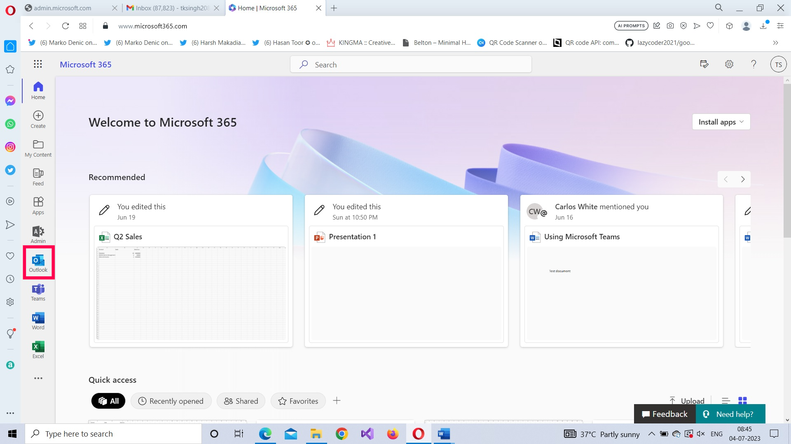

Microsoft 365 Outlook Basics III
Now that you know how to send mails using Microsoft Outlook 365, in this article let’s understand how you can setup or configure Microsoft 365 Outlook meetings. This topic was briefly explained while discussing reply all by meeting to mail option in the Microsoft 365 Outlook Basics I article. Here, let’s dive deep into the Microsoft Outlook 365 meetings and understand them better.
How to setup Microsoft Outlook 365 meetings?
After you successfully login to your Microsoft 365 tenant using your login credentials, access the Microsoft Outlook app from the App Launcher as shown in the image.
Once you are within the Outlook app, select the Event option from the New mail dropdown.

Adding a name for the meeting
Click the Add a title option to enter a name for the meeting.
Inviting attendees
Meeting attendees are of 2 types: required attendees and optional attendees. To add an attendee, click the Invite attendees box and select the users you wish to add to the meeting. To mark an attendee as optional, click the Optional link and enter the attendee email address in the respective box.
Scheduling the meeting’s date and time
You’ll notice that once you select the meeting attendees, suggested times (which is generated by comparing the user calendars) get listed. You can either choose one of them or select the date and time on your own.

- Selecting a custom schedule can be difficult because you’ll have to check the other attendee calendars for any conflicts. This is where the Scheduling Assistant comes in handy. It displays the calendars of all the attendees side by side, so that you can select a schedule when everyone is available.
- You can also set up a recurring meeting (Weekly, Monthly etc.,) by clicking the Don’t repeat dropdown and selecting the appropriate option
Note:

Selecting a meeting location or opting for teams enabled meeting
You can either go for a physical meeting (in which case you should select the meeting’s location) or meeting via Microsoft Teams. For a physical meeting, you should enter the meeting location. For a Microsoft Team’s based meeting, you should turn on the Teams meeting option

Sending the meeting invite
Once you are sure you have got the meeting details right, click the Send button at the top to send the meeting invite to the attendees. (If you don’t want to send the meeting invite immediately, you can save the invite as draft [so that it can be sent later] by clicking the Send dropdown and selecting the Save as draft option).
Checking whether the meeting was setup or not
Once the meeting is setup, it should appear in your Calendar. So go check your calendar by selecting the Calendar tab. The meeting you just setup appear in your Calendar as shown in the image.
Click the meeting card to get more info about the meeting. Use the Expand icon to get a more detailed view of the meeting as shown in the image.

Editing the meeting details
If you want to edit the meeting details – say, add more members or change the scheduled meeting date/time – you can do so by selecting the meeting card from the calendar and clicking the Edit button as shown in the image.
Note:If you reschedule a meeting – while editing the meeting details – a new meeting invite gets sent to all the attendees.
How to respond to Microsoft Outlook 365 meetings?
Apart from the link to join the meeting – if it’s a Teams enabled meeting – the attendees can also respond to the meeting with a ‘Yes’, ‘Maybe’ or ‘No’.
Accepting the meeting response
To respond to a meeting invite, the attendee should click the meeting invite. The meeting invite opens as shown in the image. The responses available to the attendee appear in the top right corner as shown in the image. Click ‘Yes’ to accept the meeting invite.
Note: Meeting organizers decide whether attendees have the right to respond to meeting invites. While configuring a meeting, if the organizer unchecks Request responses option from Response options dropdown (check image below), then the attendees won’t have the right to respond to meetings.
Suggesting a different schedule or time
Attendees have the option of suggesting a different schedule if they are not available at the time of the meeting. To propose a new time, the attendee has to click the ‘…’ icon >> Select Propose new time >> and select I might attend option as shown in the image.

Doing so opens the meeting details box with the current scheduled time. You should modify the current meeting time to a time you are available and click the Done button.

The new proposed time is displayed. The attendees also get to add a note to the organizer explaining why they want a reschedule as shown in the image. After adding the note, the attendee clicks the Send button to send his reply.
Using scheduling poll to setup Microsoft Outlook 365 meetings
What is a scheduling poll?
The biggest issue outlook meetings are confronted with are schedule conflicts among users. Though meeting organizers have scheduling assistant to assist them, chances are the scheduling assistant might not work sometimes. This is where a scheduling poll comes to their rescue.
A scheduling poll is a poll sent out to the meeting attendees (by the meeting organizer) regarding the proposed meeting schedule. If a general consensus is reached among the meeting attendees, then a new meeting is setup at the proposed meeting schedule. If not, another scheduling poll can be launched until everyone agrees on the meeting hour.
Let’s see how the scheduling poll works.
Sending out a scheduling poll
You start off just as you would setup a meeting by selecting the New Mail dropdown >> Event option as shown in the image.
The outlook meeting details page opens. Specify the meeting title and select the meeting attendees. Once this is done, you can create a Scheduling poll by clicking the Scheduling poll option at the top right corner as shown in the image below.
The Scheduling poll dialog box opens up. Select the meeting duration and the meeting schedule (date and time) as shown in the second image. (You also have the option of selecting multiple schedules).
Note: You can also view whether the meeting attendees are available or not at the proposed meeting schedule as shown in the image above.
Once the tentative meeting schedules are selected, click the Next button to proceed further.
The tentative meeting schedules you selected get displayed. There will also be a Manage poll settings dropdown (which has a bunch of predefined controls configured as shown in the second image).
Note: Enter the location, if it’s a physical meeting; else turn on the Teams meeting option.

After reviewing the tentative meeting schedules, click open the Manage poll settings dropdown.

You are presented with the following options, of which all but one is selected:
- Schedule when attendees reach consensus – auto creates a meeting when all the meeting attendees agree to a specific time schedule for the meeting.
- Hold selected times on my calendar – adds the tentative meeting schedules to the meeting organizer’s calendar once he or she successfully sends the schedule poll to the meeting attendees.
- Notify me about poll updates – notifies the organizer whenever attendees finish the poll
- Require attendees to verify their identity – allows only signed-in users to access the poll.
- Lock poll for attendees – does not allow attendees to propose a schedule of their own as response to the scheduled poll.
Configure the poll settings to meet your requirements. It’s best to go with the recommended settings though. Then click the Create Poll button.
The Scheduling poll details get displayed. Click the Send button to send the scheduling poll details to the meeting attendees.
Confirming the Scheduled Poll was mailed or not
You can do this in 2 ways:
- By checking your Sent Items folder: The scheduling poll mail should appear in your Sent Items folder as shown in the image. This serves as confirmation that the schedule poll was sent to the attendees.
- By checking your Calendar: Your calendar will contain the meeting details as on-hold items as shown in the image. When you click the on hold meeting card, it will tell you your schedule has been blocked for that period and that the block will be removed once the poll is completed, as shown in the second image.


Responding to a scheduling poll
The meeting attendees receive the scheduling poll mail as shown in the image. When they click the Vote button, they get led to the Scheduling poll as shown in the second image. The attendees can select multiple schedules. Just as they can say ‘yes’, they can also say ‘No’ to multiple schedules as shown in the third image.

Once the preferred time schedules have been selected, the attendees should click the Vote button. The meeting organizer receives the submitted details as shown in the image below.

The meeting organizer can get a more detailed view of the Scheduled poll by clicking the View Poll button available in the poll update mail.
When all the attendees unanimously select a preferred time schedule, the tentative outlook meeting turns into a confirmed outlook meeting and becomes available in the meeting organizer/attendee calendars.